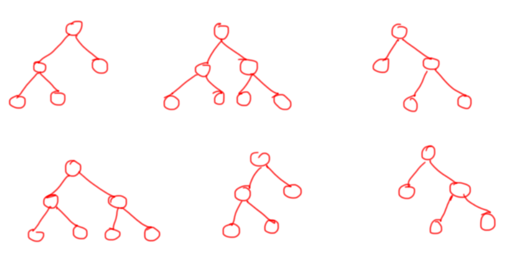
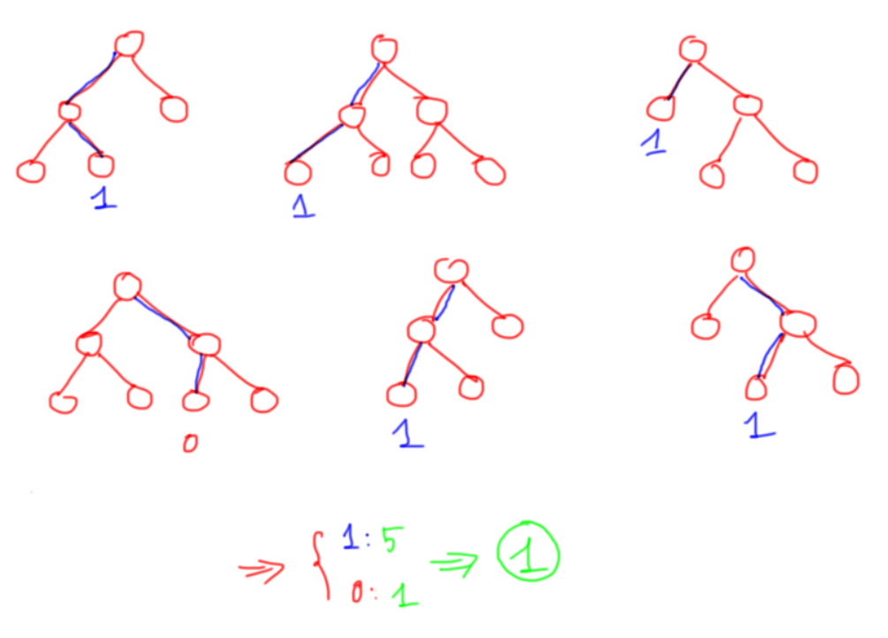
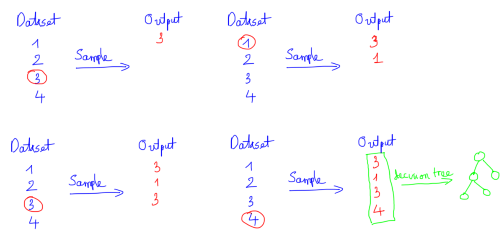
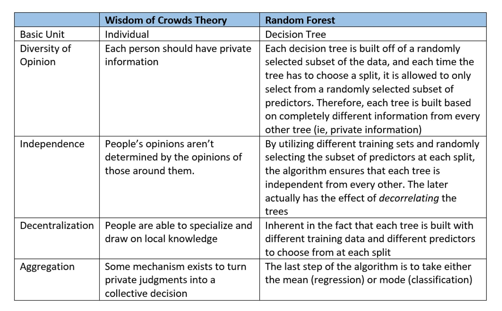

Random Forest algorithm¶
Đóng góp: Tuấn Nguyễn.
Random forest là thuật toán supervised learning, có thể giải quyết cả bài toán regression và classification.
Giới thiệu về thuật toán Random Forest¶
Random là ngẫu nhiên, Forest là rừng, nên ở thuật toán Random Forest mình sẽ xây dựng nhiều cây quyết định bằng thuật toán Decision Tree, tuy nhiên mỗi cây quyết định sẽ khác nhau (có yếu tố random). Sau đó kết quả dự đoán được tổng hợp từ các cây quyết định.
Ở bước huấn luyện thì mình sẽ xây dựng nhiều cây quyết định, các cây quyết định có thể khác nhau (phần sau mình sẽ nói mỗi cây được xây dựng như thế nào).

Sau đó ở bước dự đoán, với một dữ liệu mới, thì ở mỗi cây quyết định mình sẽ đi từ trên xuống theo các node điều kiện để được các dự đoán, sau đó kết quả cuối cùng được tổng hợp từ kết quả của các cây quyết định.

Ví dụ như trên, thuật toán Random Forest có 6 cây quyết định, 5 cây dự đoán 1 và 1 cây dự đoán 0, do đó mình sẽ vote là cho ra dự đoán cuối cùng là 1.
Xây dựng thuật toán Random Forest¶
Giả sử bộ dữ liệu của mình có n dữ liệu (sample) và mỗi dữ liệu có d thuộc tính (feature).
Để xây dựng mỗi cây quyết định mình sẽ làm như sau:
Lấy ngẫu nhiên n dữ liệu từ bộ dữ liệu với kĩ thuật Bootstrapping, hay còn gọi là random sampling with replacement. Tức khi mình sample được 1 dữ liệu thì mình không bỏ dữ liệu đấy ra mà vẫn giữ lại trong tập dữ liệu ban đầu, rồi tiếp tục sample cho tới khi sample đủ n dữ liệu. Khi dùng kĩ thuật này thì tập n dữ liệu mới của mình có thể có những dữ liệu bị trùng nhau.

Sau khi sample được n dữ liệu từ bước 1 thì mình chọn ngẫu nhiên ở k thuộc tính (k < n). Giờ mình được bộ dữ liệu mới gồm n dữ liệu và mỗi dữ liệu có k thuộc tính.
Dùng thuật toán Decision Tree để xây dựng cây quyết định với bộ dữ liệu ở bước 2.
Do quá trính xây dựng mỗi cây quyết định đều có yếu tố ngẫu nhiên (random) nên kết quả là các cây quyết định trong thuật toán Random Forest có thể khác nhau.
Thuật toán Random Forest sẽ bao gồm nhiều cây quyết định, mỗi cây được xây dựng dùng thuật toán Decision Tree trên tập dữ liệu khác nhau và dùng tập thuộc tính khác nhau. Sau đó kết quả dự đoán của thuật toán Random Forest sẽ được tổng hợp từ các cây quyết định.
Khi dùng thuật toán Random Forest, mình hay để ý các thuộc tính như: số lượng cây quyết định sẽ xây dựng, số lượng thuộc tính dùng để xây dựng cây. Ngoài ra, vẫn có các thuộc tính của thuật toán Decision Tree để xây dựng cây như độ sâu tối đa, số phần tử tối thiểu trong 1 node để có thể tách.
Tại sao thuật toán Random Forest tốt¶
Trong thuật toán Decision Tree, khi xây dựng cây quyết định nếu để độ sâu tùy ý thì cây sẽ phân loại đúng hết các dữ liệu trong tập training dẫn đến mô hình có thể dự đoán tệ trên tập validation/test, khi đó mô hình bị overfitting, hay nói cách khác là mô hình có high variance.
Thuật toán Random Forest gồm nhiều cây quyết định, mỗi cây quyết định đều có những yếu tố ngẫu nhiên:
Lấy ngẫu nhiên dữ liệu để xây dựng cây quyết định.
Lấy ngẫu nhiên các thuộc tính để xây dựng cây quyết định.
Do mỗi cây quyết định trong thuật toán Random Forest không dùng tất cả dữ liệu training, cũng như không dùng tất cả các thuộc tính của dữ liệu để xây dựng cây nên mỗi cây có thể sẽ dự đoán không tốt, khi đó mỗi mô hình cây quyết định không bị overfitting mà có thế bị underfitting, hay nói cách khác là mô hình có high bias. Tuy nhiên, kết quả cuối cùng của thuật toán Random Forest lại tổng hợp từ nhiều cây quyết định, thế nên thông tin từ các cây sẽ bổ sung thông tin cho nhau, dẫn đến mô hình có low bias và low variance, hay mô hình có kết quả dự đoán tốt.
Ý tưởng tổng hợp các cây quyết định của thuật toán Random Forest giống với ý tưởng của The Wisdom of Crowds được đề xuất bởi by James Surowiecki vào năm 2004. The Wisdom of Crowds nói rằng thông thường tổng hợp thông tin từ 1 nhóm sẽ tốt hơn từ một cá nhân. Ở thuật toán Random Forest mình cũng tổng hợp thông tin từ 1 nhóm các cây quyết định và kết quả cho ra tốt hơn thuật toán Decision Tree với 1 cây quyết định.
Ví dụ: Mọi người muốn mua 1 sản phẩm trên tiki chẳng hạn, khi đọc review sản phẩm, nếu chỉ đọc 1 review thì có thể là ý kiến chủ quan của người đấy, hoặc sản phẩm người ấy mua không may bị lỗi gì; thông thường để có cái nhìn tốt về sản phẩm, mình hay đọc tất cả review rồi cho ra quyết định cuối cùng.
Sự tương đồng giữa Random Forest và Wisdom of Crowds, nguồn.
